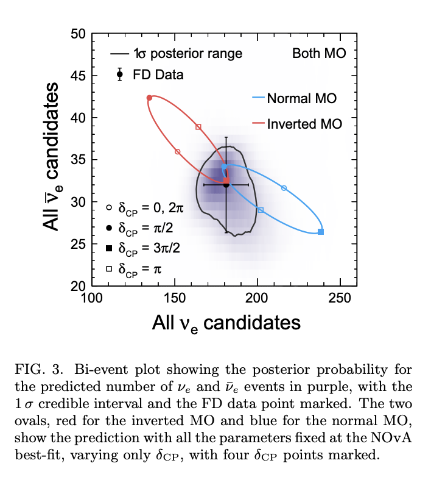

Show code cell source
import orbit_nb
Show code cell output
Current and Future Neutrino Oscillation Experiments#
Theory foundations (two-family oscillations, MSW matter effect, three-family framework): nu_oscillations.ipynb.
This notebook reviews the experimental programme:
LBL — NOvA, T2K (current), DUNE, HyperK (future)
Reactor SBL/medium-baseline — Daya Bay, RENO (past), JUNO (running)
Atmospheric / neutrino telescopes — KM3NeT, IceCube (Appendix)
Long Base Line Experiments: \(\delta_{CP}\) and mass hierarchy#
\(\nu_\mu \to \nu_e\) and \(\bar{\nu}_\mu \to \bar{\nu}_e\) \(\Rightarrow\) sensitive to \(\theta_{13}\), \(\delta_{CP}\), mass ordering.
Propagation affected by matter effects in Earth’s mantle
Second-order oscillation \(\Rightarrow\) large detectors + intense beams
List of Long Base Line Experiments#
|

LBL appearance probability [30]:
Structure of the amplitude:
1st term: sensitive to mass hierarchy; \(V_e\) flips sign for \(\nu/\bar\nu\)
2nd term: sensitive to hierarchy + \(\delta_{CP}\), but suppressed by \(J \propto \sin 2\theta_{13}\)
Both effects \(\Rightarrow\) need experiments at different \(L\) and \(E\).
NOvA#
\(\nu_\mu\) NuMI beam, Fermilab \(\to\) Ash River, MN, \(L = 810\) km (near detector at 1 km)
Detector 14.5 mrad off-axis \(\Rightarrow\) \(E_\nu\) peaks at 2 GeV
14 kt of plastic PVC cells (H + V planes) filled with LS
Running since 2014 (\(\nu\)), 2016 (\(\bar\nu\))
|
|
|


NOvA construction timelapse movie
NOvA results on \(\nu_\mu (\bar{\nu}_\mu)\) disappearance
NOvA is sensitive to the atmospheric oscillations regime, with the \(\nu_\mu \to \nu_\mu\) (and anti-neutrinos) disappearance channels
Notice that there is an ambiguity in which octant \(\theta_{23}\) is!
Main goal: CP violation + mass ordering
|

|

NOvA results 2021 [31]
|

NOvA results 2021 [31]
|
|
TAUP 2019 conference |
ICHEP 2021 |


NOvA conference results: TAUP 2019, ICHEP 2022
|
|
NOvA neutrino 2024 |
Bayes posterior probability |


NOvA conference results: Neutrino 2024
NOvA: 10-year complete analysis (September 2025)#
Most precise oscillation-parameter measurement from a single LBL experiment [42]:

Mass ordering: mild NH preference (Bayes factor 2.4, \(P(\text{NH}) \sim 70\%\))
\(\delta_{CP}\): CP conservation not yet excluded
T2K#

T2K is less sensitive to matter effects but has some sensitivity to \(\delta\)-CP in \(\nu_\mu \to \nu_e\) and \(\bar{\nu}_\mu \to \bar{\nu}_e\) oscillations.
|

T2K PID (2019) [32]
|
|
T2K \(\nu_e, \bar{\nu}_e\) appearance, (2020) [32] |
\(\sin^2 \theta_{23}\) vs \(\delta\) CP |


|
T2K ‘elipses’ and CP posterior probability |

Results from Neutrino 2024
T2K + NOvA: first joint analysis (October 2025)#
Published in Nature [44]:
10 yr T2K + 6 yr NOvA (\(\nu\) and \(\bar\nu\))
\(|\Delta m^2_{32}|\) with < 2% precision (world-best):
3\(\sigma\) \(\delta_{CP}\) interval:
NH: \([-1.38\pi, 0.30\pi]\)
IH: \([-0.92\pi, -0.04\pi]\)
CP violation: evidence if ordering is IO
Mass ordering: no strong preference
Bi-probability diagram: \(\bar\nu_e\) vs \(\nu_e\) candidates at NOvA (a) and T2K (b) for Normal and Inverted ordering. Markers indicate different \(\delta_{\rm CP}\) values [44]. |
Allowed regions from the joint T2K + NOvA analysis [44]. |
Exercise: LBL appearance probability and the CP asymmetry
The CP asymmetry in the \(\nu_\mu\to\nu_e\) appearance channel is:
It is proportional to \(\sin\delta_{\rm CP}\) and to the Jarlskog-like factor \(J \propto \sin 2\theta_{12}\sin 2\theta_{13}\sin 2\theta_{23}\). It is also modified by matter effects, which mimic a non-zero \(\delta_{\rm CP}\).
Questions:
Using
oscillations.osc_prob_3fam, compute \(P(\nu_\mu\to\nu_e)\) and \(P(\bar\nu_\mu\to\bar\nu_e)\) at T2K kinematics (\(L = 295\) km, \(E = 0.6\) GeV) for \(\delta_{\rm CP} = -90°\) and \(\delta_{\rm CP} = +90°\). Which value gives the larger neutrino appearance probability? Compute \(\mathcal{A}_{\rm CP}\) in each case.Compute \(\mathcal{A}_{\rm CP}(\delta_{\rm CP})\) for \(\delta_{\rm CP}\in[0°,360°]\) at T2K (\(L=295\) km, \(E=0.6\) GeV) and NOvA (\(L=810\) km, \(E=2\) GeV). Plot both curves and explain why \(|\mathcal{A}_{\rm CP}|\) is larger at NOvA despite the smaller Jarlskog factor (hint: matter effects at longer baseline).
Plot the bi-probability diagram — the parametric curve \((P(\nu_\mu\to\nu_e),\,P(\bar\nu_\mu\to\bar\nu_e))\) as \(\delta_{\rm CP}\) varies from \(0°\) to \(360°\) — for T2K and NOvA, for both NH (solid) and IH (dashed). Mark the point \(\delta_{\rm CP} = -90°\). This “Cabibbo ellipse” visualises how the two experiments break the hierarchy–\(\delta_{\rm CP}\) degeneracy.
Neutrino Mixing Matrix Parameters. Global fits#
There is an international effort to combine the experimental results in the framework of different neutrino scenarios.
This is the web page of NuFit group
|

NuFit-6.0 (2024) — three-flavour global fit [33], updated with T2K, NOvA, Daya Bay, RENO, SK-atm, IceCube data and the first JUNO results. The NuFit-6.0 (NH) values are the default values in the oscillation widgets of this notebook.
Next-generation oscillation experiments#
T2K + NOvA (current): pioneering \(\delta_{CP}\) and ordering results (Nature 2025)
JUNO (running since Aug 2025): first results already world-best on \(\Delta m^2_{21}\), \(\theta_{12}\)
DUNE (~2031) + HyperK (~2028): precision ordering + CP violation
SBL: JUNO (2025 – )#
Jiangmen Underground Neutrino Observatory, China
20 kt liquid scintillator, 52.5 km from Taishan + Yangjiang (17.4 GW\(_\text{th}\))
\(\sigma_E/E \simeq 3\%/\sqrt{E/\text{MeV}}\) with > 45 000 PMTs
Reactor \(\bar\nu_e\) via IBD; also solar, geo-\(\nu\), SN
Main goals:
Mass ordering at \(\geq 3\sigma\) (~6.5 yr)
\(\Delta m^2_{21}\), \(\sin^2\theta_{12}\) at < 1%
Status (2025):
LS filling completed, data-taking since 26 Aug 2025
First results Nov 2025 (59.1 eff days) [38]
|
|
|
location |
detector scheme |
detector image |


import oscillations
#oscillations.plot_juno_spectrum()
Prospects:
|
|


JUNO [34]
JUNO first results (November 2025)#
With only 59.1 effective days [38]:
~1.6× better than all prior combined data
Post-JUNO global fit [39]:
Ordering: ~6–7 yr for \(3\sigma\) via \(\Delta m^2_{31}\)/\(\Delta m^2_{32}\) interference in the \(\bar\nu_e\) spectrum.
JUNO (2025) [38]
Exercise: JUNO and the reactor spectrum interference pattern
At \(L = 52.5\) km, the \(\bar\nu_e\) spectrum carries two oscillation frequencies. The survival probability at leading order in \(\theta_{13}\) is:
NH and IH differ in the sign of \(\Delta m^2_{31}\), which shifts the relative phase of the two fast oscillations — the key to JUNO’s mass ordering determination.
Questions:
At \(E = 5\) MeV and \(L = 52.5\) km, compute \(\phi_{21}\), \(\phi_{31}\) and \(\phi_{32}\) with NuFit-6.0 parameters for NH and IH. How many complete fast-oscillation cycles fit in the energy window \(E\in[2,8]\) MeV?
Use
oscillations.plot_juno_spectrumto switch between NH and IH. In which region of the spectrum (\(E \lesssim 4\) MeV or \(E\gtrsim 4\) MeV) do the two orderings show the largest difference? Explain qualitatively in terms of the interference condition \(\phi_{31} \approx \phi_{32} + n\pi\).JUNO’s energy resolution is \(\sigma_E/E \simeq 3\%/\sqrt{E/\mathrm{MeV}}\). Using
oscillations.osc_prob_3fam, compute \(P_{ee}(E)\) over \(E\in[2,8]\) MeV and convolve it with a Gaussian of width \(\sigma_E(E)\). Plot both the ideal and smeared spectra. Verify that the fast oscillations survive the smearing.
LBL: DUNE (~2031 – )#
35 kt active LArTPC (Phase I) at SURF, South Dakota — 1300 km from LBNF/PIP-II beam at Fermilab.
|
|
Layout |
Appearance probability |


Physics:
\(\nu_\mu(\bar\nu_\mu)\) disappearance + \(\nu_e(\bar\nu_e)\) appearance at \(E \sim 3\) GeV
\(\sim 10^3\) \(\nu_e\) + \(\sim 10^4\) \(\nu_\mu\) per year at full power
Also SN neutrinos, proton decay
Beam + detector:
LBNF 1.2 MW (Phase I) → 2.4 MW (Phase II) via PIP-II SC linac
Far detector 1.5 km deep at SURF
Phase I: 2 × 17 kt LArTPC (35 kt active / 70 kt total)
FD1: Horizontal Drift (based on ProtoDUNE-HD)
FD2: Vertical Drift
Status (2025–2026):
Cavern excavation completed 2024
Cryostat steel shipped from CERN; underground install early 2026
2×2 ND-LAr prototype: first accelerator \(\nu\) at FNAL, Aug 2024 [41]
ProtoDUNE-HD test beam 2024; ProtoDUNE-VD 2025
Physics start ~2030–2031 [36]
Two 1:20-scale prototypes at CERN:
ProtoDUNE-HD (Single-phase): horizontal drift in LAr, wire readout, 3.5 m drift, 500 V/cm. Test beam 2022, 2024 [35]
ProtoDUNE-VD (Vertical Drift): vertical drift with gas-phase amplification, 12 m drift. Beam data 2025
|

Previous experience with ICARUS at LNGS
|

ICARUS event [35] (2011) of a \(\nu_\mu\) CC interaction (CERN CNGS beam to LNGS)
Currently two large LArTPC prototypes (ProtoDUNE) operating at CERN (2018-)
DUNE Phase I — 2 LArTPC modules:
FD1 (Horizontal Drift) — from ProtoDUNE-HD (CERN), test beam 2024
FD2 (Vertical Drift) — from ProtoDUNE-VD, data 2025
DUNE sensitivities to ordering and \(\delta_{CP}\) [36]:


DUNE report [36]
As a function of the modules

DUNE report [36]

DUNE report [36]
HyperKamiokande (2028 – )#
|
|
|
Detector layout |
Excavated dome |
Cavern bottom |


Construction status (2025–2026):
Main cavern (330 000 m³) completed 31 Jul 2025 — one of the largest artificial excavations
Water tank (260 000 m³) + PMT install: 2025–2027
Data-taking start: 2028
Detector:
78 m tall × 74 m ⌀ \(\Rightarrow\) 260 kt water (186 kt active)
\(> 40 000\) high-QE PMTs (2× SK) [37]
8.5× SuperKamiokande
J-PARC beam:
T2K running since Dec 2023 at 710–760 kW (+40%, horn 320 kA) [40]
HK target: 1.3 MW (~2028)


HK report (2018) [37]
|
|


{kind=link}
{kind=link}
{kind=link}
{kind=link}
{kind=link}
{kind=link}
{kind=link}
{kind=link}
HK report (2018) [37]
HK accelerator neutrino sensitivity study (May 2025)#
HK sensitivity study [45] assuming \(27 \times 10^{21}\) POT over 10 yr (1.3 MW):
~10 000 \(\nu_\mu\) + ~2000 \(\nu_e\) events at far detector
\(5\sigma\) CPV discovery in < 3 yr at \(\delta_{CP} = -\pi/2\) (or ~6 yr without MO constraint)
10 yr \(\Rightarrow\) \(5\sigma\) CPV over > 60% of \(\delta_{CP}\) values
\(\delta_{CP}\) resolution: 6°–20° (\(1\sigma\), depends on true value)
\(3\sigma\) exclusion of wrong \(\theta_{23}\) octant in most of parameter space
\(\Delta m^2_{32}\) precision: ~0.4%
{kind=link}
Expected number of \(\nu_e\) and \(\bar{\nu}_e\) candidates after 10 years, for different values of the oscillation parameters. The best fit (cross) is compared with the expected counts for different \(\sin^2\theta_{23}\), \(\delta_{\rm CP}\) and mass ordering values [45].
{kind=link}
{kind=link}
HK sensitivity (2025) [45]: CPV discovery significance vs data-taking time (left) and \(1\sigma\) resolution on \(\delta_{\rm CP}\) vs time and vs true \(\delta_{\rm CP}\) value (right).
Parameter |
\(\delta_{\rm CP}=0°\) |
\(\delta_{\rm CP}=-90°\) |
\(\sin^2\theta_{23}\) |
\(\Delta m^2_{32}\) |
\(\sin^2\theta_{13}\) (with RC) |
|---|---|---|---|---|---|
Stat. only |
\(5.2°\) |
\(18.5°\) |
1.95% |
0.29% |
2.17% |
Improved syst. |
\(6.3°\) |
\(20.2°\) |
2.54% |
0.35% |
2.47% |
Expected \(1\sigma\) resolution of oscillation parameters after 10 years of data taking.
Summary and conclusions#
Oscillations well established (solar + atmospheric) — Nobel 2015 (Kajita, McDonald)
JUNO (Aug 2025 –):
First results (Nov 2025, 59 d) already world-best on \(\Delta m^2_{21}\), \(\sin^2\theta_{12}\)
Mass ordering in ~6 yr
T2K + NOvA (running):
NOvA 10-yr solo (Sep 2025): most precise single-experiment \(|\Delta m^2_{32}|\)
T2K + NOvA joint (Nature, Oct 2025): \(|\Delta m^2_{32}|\) < 2%, evidence for CPV if IO
Future:
HyperK (cavern done Jul 2025, data 2028): CPV + ordering with record stats
DUNE (~2031): 35 kt LArTPC at 1300 km; 2×2 prototype data Aug 2024
Open questions: absolute mass, Dirac/Majorana, leptonic CPV, solar \(\Delta m^2_{21}\) tension.
{kind=link}
Appendix: Oscillations with neutrino telescopes#
Deep-sea and ice Cherenkov detectors measure atmospheric neutrino oscillations and mass ordering via MSW matter effects, complementing beam and reactor experiments.
KM3NeT: ORCA and ARCA#
KM3NeT — deep-sea Cherenkov \(\nu\) telescope, Mediterranean. Common tech (multi-PMT DOMs, DU strings), two physics programmes:
Detector |
Location |
Depth |
Volume |
Energy |
Physics |
|---|---|---|---|---|---|
ORCA |
Toulon (FR) |
2450 m |
~7 Mt |
3–100 GeV |
Atm. osc., ordering |
ARCA |
Sicily (IT) |
3500 m |
~1 km³ |
1 TeV–1 PeV |
Astrophysical \(\nu\) |
KM3NeT/ORCA — Atmospheric Oscillations and Mass Ordering#
Earth-crossing atmospheric \(\nu\) at 3–100 GeV \(\Rightarrow\) strong MSW effects \(\Rightarrow\) ordering-dependent asymmetry:
NH: resonant \(\nu_\mu\) disappearance for upgoing \(E \sim 5\)–10 GeV
IH: resonance in \(\bar\nu_\mu\) instead
Complementary to DUNE (beam, 1300 km) and JUNO (reactor interference).
Status + first results:
Full: 115 DU × 18 DOMs = 2070 modules
Physics since 2020 (6 DU → 21 DU)
First osc. measurement (2024, 6 DU, 433 d): \(\sin^2\theta_{23} = 0.51^{+0.12}_{-0.09}\), \(|\Delta m^2_{32}| = 2.35^{+0.71}_{-0.40}\times10^{-3}\) eV² [KM3NeT-ORCA]
Full ORCA (6 yr): \(> 3\sigma\) ordering sensitivity
Also \(\nu_\tau\) appearance + NSI
KM3NeT/ARCA — High-Energy Neutrino Astronomy#
Target 1 TeV–1 PeV astrophysical \(\nu\)
Northern hemisphere \(\Rightarrow\) views Galactic Centre + Southern sky (complements IceCube)
First detection of Galactic diffuse emission (2023), consistent with IceCube
Targets: blazars, starburst galaxies, SNRs
ARCA + IceCube \(\Rightarrow\) full-sky coverage
IceCube: DeepCore, Upgrade and Atmospheric Oscillations#
IceCube — South Pole, 1 km³, 5160 DOMs (1450–2450 m).
DeepCore#
8 denser strings at centre, threshold ~5 GeV. Measures \(\nu_\mu\) disappearance + \(\nu_\tau\) appearance (5–100 GeV):
\(\sin^2\theta_{23}\), \(|\Delta m^2_{32}|\) \(\sim\) MINOS/NOvA precision
First astrophysical \(\nu_\tau\) (2020)
Earth-matter ordering sensitivity above 10 GeV
IceCube-Upgrade (~2026–2027)#
7 new strings with mDOM/D-Egg multi-PMT modules, threshold ~1–2 GeV:
Recalibration of full array
\(\theta_{23}\), \(\Delta m^2_{32}\) at T2K/NOvA level
\(\nu_\tau\) appearance + NC ratios
Pathfinder to IceCube-Gen2 (10 km³)
Astrophysical highlights#
Result |
Value |
Reference |
|---|---|---|
Diffuse flux (2013) |
\(E^{-2.5}\), 60 TeV–10 PeV |
Science 342 (2013) |
NGC 1068 point source |
\(4.2\sigma\) |
|
Galactic plane |
\(4.5\sigma\) |
IceCube + KM3NeT \(\Rightarrow\) all-sky coverage for multi-messenger astrophysics.
References#
[1] B. Pontecorvo, Sov. Phys. JETP 6 (1957) 429; B. Pontecorvo, Sov. Phys. JETP 7 (1958) 172.
[2] Z. Maki, M. Nakagawa and S. Sakata, Prog. Theor. Phys. 28 (1962) 870.
[3] B. Pontecorvo, Sov. Phys. JETP 26 (1968) 984.
[4] V. N. Gribov and B. Pontecorvo, Phys. Lett. B28 (1969) 493.
[5] J. N. Bahcall et al., Rev. Mod. Phys. 54, 767 (1982); N. Bahcall, A. M. Serenelli and S. Basu, Astrophys. J. 621, L85 (2005), arXiv:astro-ph/0412440.
[6] R. Davis, Jr., D. S. Harmer and K. C. Hoffman, Phys. Rev. Lett. 20, 1205 (1968).
[7] B. T. Cleveland et al., Astrophys. J. 496, 505 (1998).
[8] C. Pena-Garay and A. Serenelli (2008), [arXiv:0811.2424].
[9] J. N. Abdurashitov et al. (SAGE), J. Exp. Theor. Phys. 95, 181 (2002), [Zh. Eksp. Teor. Fiz.122,211(2002)], [arXiv:astro-ph/0204245].
[10] W. Hampel et al. (GALLEX), Phys. Lett. B447, 127 (1999).
[11] M. Altmann et al. (GNO), Phys. Lett. B616, 174 (2005), [hep-ex/0504037].
[12] J. N. Abdurashitov et al. (SAGE), Phys. Rev. C80, 015807 (2009), [arXiv:0901.2200].
[13] K. Abe et al. (Super-Kamiokande), Phys. Rev. D94, 5, 052010 (2016), [arXiv:1606.07538]
[14] N. Vinyoles et al., Astrophys. J. 835, 2, 202 (2017), [arXiv:1611.09867].
[15] Q. R. Ahmad et al. (SNO), Phys. Rev. Lett. 87, 071301 (2001), [arXiv:nucl-ex/0106015].
[16] Q. R. Ahmad et al. (SNO), Phys. Rev. Lett. 89, 011301 (2002), [arXiv:nucl-ex/0204008].
[17] B. Aharmim et al. (SNO), Phys. Rev. C88, 025501 (2013), [arXiv:1109.0763].
[18] B. Aharmim et al. (SNO), Phys. Rev. C72, 055502 (2005), [arXiv:nucl-ex/0502021].
[19] S. P. Mikheev and A. Yu. Smirnov, Sov. J. Nucl. Phys. 42 (1985) 913, Yad. Fiz. 42 (1985) 1441.
[20] G. Bellini et al., Borexino Collaboration, Phys. Rev. D 82 (2010) 033006; G. Bellini et al., Phys. Rev. Lett. 107 (2011) 141302; M. Agostini et al., BOREXINO Collaboration, Nature 562 (2018) 505.
[21] K. Eguchi et al. (KamLAND), Phys. Rev. Lett. 90, 021802 (2003), [hep-ex/0212021].
[22] T. Araki et al. (KamLAND), Phys. Rev. Lett. 94, 081801 (2005), [hep-ex/0406035];
[23] A. Gando et al. (KamLAND), Phys. Rev. D88, 3, 033001 (2013), [arXiv:1303.4667];
[24] Y. Fukuda et al. (Super-Kamiokande), Phys. Rev. Lett. 81, 1562 (1998), [hep-ex/9807003].
[25] Y. Ashie et al. (Super-Kamiokande), Phys. Rev. Lett. 93, 101801 (2004), [hep-ex/0404034].
[26] P. Adamson et al. (MINOS), Phys. Rev. Lett. 110, 25, 251801 (2013), [arXiv:1304.6335].
[26b] F. P. An et al. (Daya Bay), Phys. Rev. Lett. 108, 171803 (2012), [arXiv:1203.1669].
[27] D. Adey et al. (Daya Bay), Phys. Rev. Lett. 121, 24, 241805 (2018), [arXiv:1809.02261].
[28] G. Bak et al. (RENO), Phys. Rev. Lett. 121, 20, 201801 (2018), [arXiv:1806.00248].
[29] H. de Kerret et al. (Double Chooz) (2019), [arXiv:1901.09445].
[30] A. Cervera et al., Nucl. Phys. B 579 (2000) 17 [Erratum: Nucl. Phys. B 593 (2001) 731], [arXiv:hep-ph/0002108]; M. Freund, Phys. Rev. D 64 (2001) 053003, [arXiv:hep-ph/0103300]; E. K. Akhmedov et al., JHEP 0404 (2004) 078, [arXiv:hep-ph/0402175].
[31] M. A. Acero et al. (NOvA), Phys. Rev. Lett. 123, 151803 (2019), [arXiv:1906.04907]; M. A. Acero et al. (NOvA), Phys. Rev. D 106, 032004 (2022), [arXiv:2108.08219].
[32] K. Abe et al. (T2K), Nature 580, 339 (2020), [arXiv:1910.03887]; K. Abe et al. (T2K), Eur. Phys. J. C 83, 782 (2023), [arXiv:2303.03222].
[33] I. Esteban et al. (NuFit-6.0), JHEP 12 (2024) 216, [arXiv:2410.05380], www.nu-fit.org.
[34] F. An et al. (JUNO), J. Phys. G43, 030401 (2016), [arXiv:1507.05613].
[35] C. Rubbia et al., JINST 6, P07011 (2011), [arXiv:1106.0975].
[36] B. Abi et al. (DUNE), JINST 19 (2024), [arXiv:2312.03130]; DUNE Physics Report, [arXiv:2002.03005].
[37] K. Abe et al. (Hyper-Kamiokande), [arXiv:1805.04163]; K. Abe et al. (HK), Frontiers in Physics 12 (2024), [arXiv:2309.03009].
[38] A. Abusleme et al. (JUNO), First measurement of reactor antineutrino oscillations at JUNO (Nov. 2025), [arXiv:2511.14593].
[39] M. C. Gonzalez-Garcia et al., Updated bounds on (1,2) neutrino oscillation parameters after first JUNO results (Nov. 2025), [arXiv:2511.21650].
[40] T2K Collaboration, T2K enters a new phase (Jan. 2024), J-PARC press release.
[41] DUNE Collaboration, DUNE Phase II Detectors (2025), [arXiv:2412.14941].
[42] M. A. Acero et al. (NOvA), Precision measurement with 10 years of data (Sep. 2025), [arXiv:2509.04361].
[43] K. Abe et al. (T2K + SK), First joint oscillation analysis of SK atmospheric and T2K accelerator neutrino data (May 2024), [arXiv:2405.12488].
[44] T2K and NOvA Collaborations, Joint neutrino oscillation analysis from T2K and NOvA, Nature (Oct. 2025), [arXiv:2510.19888].
[45] K. Abe et al. (Hyper-Kamiokande), Sensitivity to neutrino oscillation parameters using accelerator neutrinos (May 2025), [arXiv:2505.15019].